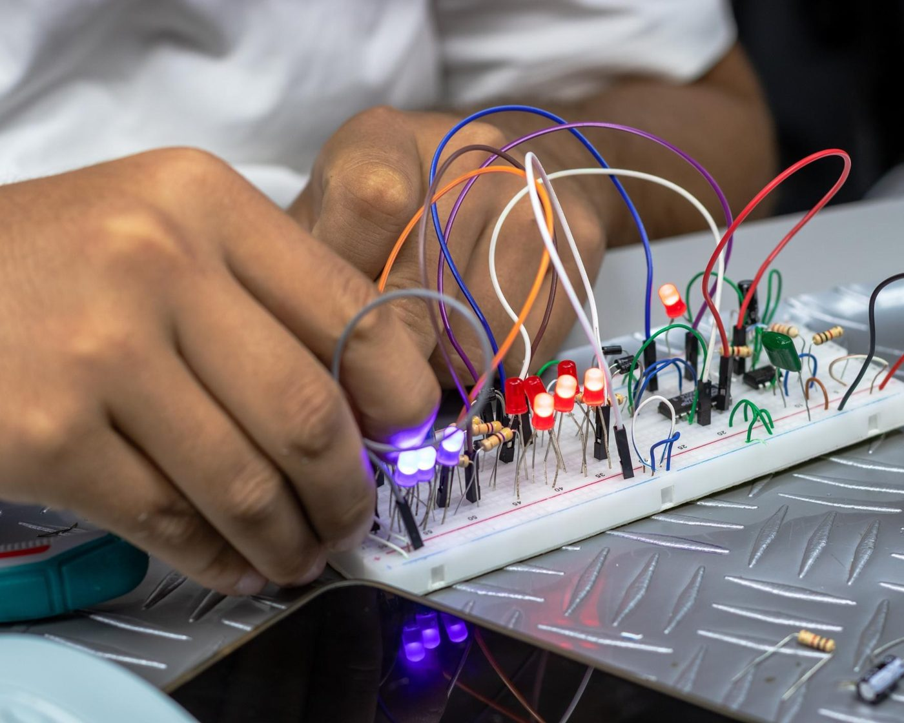
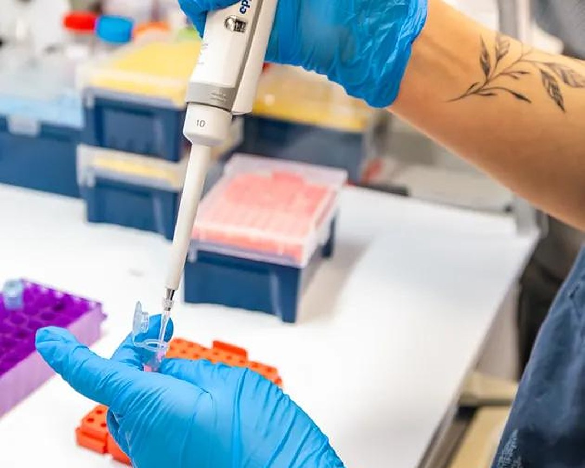

Mesleğin ellerinde başlar.
Sağlık, Elektrik-Elektronik ve Gıda alanlarında teoriyi uygulamayla birlikte öğreten bir meslek lisesi. 1991'den beri Batman'da.
Hangi alanlarda eğitim veriyoruz?
Mesleki ve Teknik Anadolu Lisesi bünyesinde üç alanda eğitim veriyoruz. Her alanın sayfasında dersler ve kayıt bilgileri yer alır.

Elektrik-Elektronik
Elektrik-Elektronik alanında teoriyi uygulamayla öğrenirsin.
Alanı incele
Okulumuzu tanımanız için temel bilgiler
Aklınıza takılan her konuda okulumuzu arayabilir veya yerinde ziyaret edebilirsiniz.
1991'den beri Batman'da
Okulumuz 1991'den bu yana Batman'da eğitim veriyor.
Teori ve uygulama bir arada
Öğrenciler teorik bilgiyi uygulamayla birlikte öğrenir.
Rehberlik desteği
Rehberlik servisimiz öğrencilerin kendini tanımasına ve sorunlarının üstesinden gelmesine destek olur.
Hafta sonu kursları
Ders saatleri dışında hafta sonu kurs programı ve sosyal etkinlikler düzenlenir.
Güncel
Karne günü sevinç ve heyecan bir arada
Mezuniyet gecemiz
Bilim Teknik Fuarı
Laboratuvardan sahneye
Uygulama dersleri, fuarlar, törenler ve turnuvalar. Okulumuzda bir yıl nasıl geçiyor, fotoğraflarla görün.
Okulumuzu yakından tanıyın.
Eğitim alanlarımız ve kayıt süreci hakkında bilgi almak için bize ulaşın ya da okulumuzu ziyaret edin.